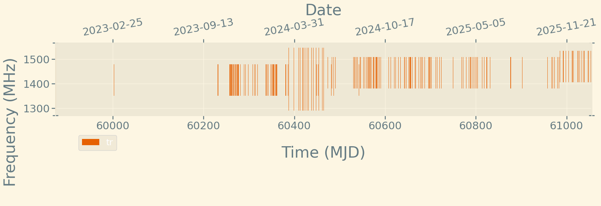

Back to main page
Click on the source name to see the observing plot.
Sources ↓
0033+2849
0116+2037
0241+1337
0417+0756
0455+6315
1033-2753
1209+5850
1211+1148
1634+4450
1814+1948
1818-1531
1919+8603
1949-2512
2023IXF
2041+1601
231126A
ADLEO
B0115+63
B0138+59
B0329+54
B0355+54
B0525+21
B0531+21
B0540+23
B0809+74
B0950+08
B1133+16
B1237+25
B1508+55
B1842+14
B1919+21
B1924+16
B1929+10
B1933+16
B1937+21
B1944+17
B1946+35
B1953+50
B2020+28
B2021+51
B2111+46
B2255+58
B2319+60
BSGR
BSGR1830
EQPEG
EVLAC
F19
F220912
F230814
F231001
FRB 20200929C
FRB
FRB190520
FRB190714A
FRB20180301
FRB20180901A
FRB20181030E
FRB20181224E
FRB20181226B
FRB20190103C
FRB20190111A
FRB20190118A
FRB20190122C
FRB20190124C
FRB20190202A
FRB20190518C
FRB20190520B
FRB20190915D
FRB20191013D
FRB20200120
FRB20200120_R
FRB20200223B
FRB20201114A
FRB20220912A
FRB20240114A
FRB20240619D
FRB210117
FRB210320
FRB210407
FRB210807
FRB211212
FRB220105
HOLM2
IC342
ILTJ0904
ILTJ1101
J0134-0741
J0243
J0528+2200
J1136+1252
J1634+44
J1807+13
J1818_15
J1841-0456
J1848+1516
LOTSS1101
LS63
LSI61
LSI63
M81
M81R
M82
M94
MWC507
NGC1569
NGC2403
NGC4449
NGC672
NGC6946
NR181030E
NR181224E
NR190103C
NR190111A
NR190122C
NR190518C
NR210603A
NR221022A
NR241228A
NR250617A
NR250906
None
PSV1
R1
R105
R109
R112
R120
R136
R155
R170
R173
R179
R181226
R191105B
R200120
R200223
R201114
R210117
R210323C
R220529
R220912
R230511
R230814A
R231001
R231126A
R240114
R240121
R240209
R240209A
R240216
R240430
R240619D
R240722
R240722A
R240723
R250316A
R250320
R250924A
R251130A
R3_D
R48
R54
RILTJ0904
RM82
SGR
SGR1830
SGR1841
SGR1935+2154
SGR1935
SN2012AU
SN2023IXF
SW4U0115
SWJ1727
V490CEP
WXUMA
XTE1810
Previous ←
Next →
Observing plot for B2021+51

Some more information goes here
Download data
Back to main page